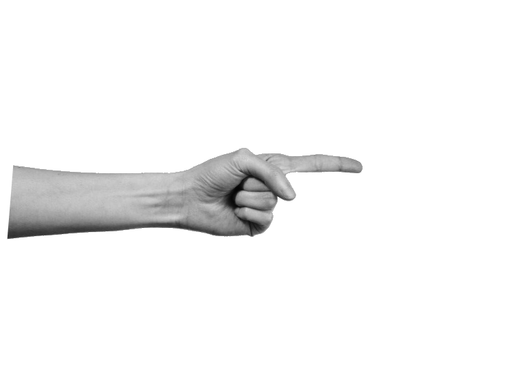
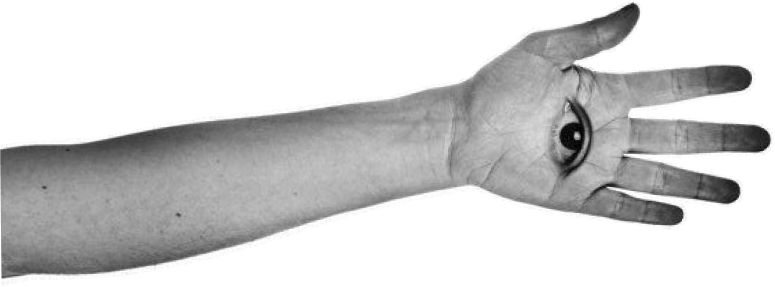
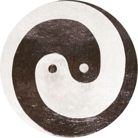
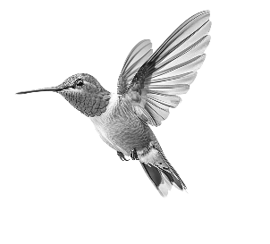
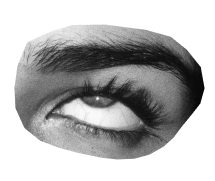

Похожие темы
В группе собираются люди с созвучными запросами. Ответ одного участника помогает другому увидеть свой процесс яснее.
Суть формата

В личной консультации или ченнелинг-сессии можно разобрать большое количество вопросов. Но чаще всего они крутятся вокруг одной важной темы: внутреннего механизма, который требует изменений: убеждения, страхи, выбора или точка роста.
Потому что за разными вопросами часто скрывается один и тот же внутренний механизм. Когда он становится видимым, человек понимает, как именно этот механизм влияет на разные сферы его жизни, и получает ключ к решению сразу нескольких ситуаций. Поэтому одного точно сформулированного вопроса часто достаточно, чтобы увидеть общую картину и понять, какие действия помогут её изменить.

Почему группа эффективна

Общее поле группы работает на вас: темы вопросов участников часто перекликаются, дополняют и раскрывают друг друга.
В группе собираются люди с созвучными запросами. Ответ одного участника помогает другому увидеть свой процесс яснее.
Чужой вопрос может поднять тему, в которую вы ещё не смотрели, но которая уже готова развернуться для вас.
Формально вы задаёте один вопрос, но получаете десять ответов, которые могут подсветить разные стороны вашего пути.
Вы приходите не только за своим ответом, а попадаете в пространство, где тема вашего вопроса раскрывается объёмнее через вопросы других людей и через общий процесс встречи.

Как проходит встреча
В начале встречи мы знакомимся и настраиваемся на общий процесс работы, создавая себе комфортную обстановку ясности и доверия.
Каждый участник задаёт один важный вопрос. Порядок вопросов я выбираю интуитивно по ходу встречи.
Это всегда конкретные действия и подсказки, которые можно применить в жизни сразу, а также рекомендации и инструменты для дальнейших шагов.
Часто бывает полезно провести короткую потоковую практику для всей группы, которая поможет в проживании и закреплении результата работы.

Приватность
Мы соблюдаем приватность участников, поэтому запись встречи не ведётся.
Кому подойдёт
Подготовка
Мария Шишкина
Я психолог и специалист по работе с подсознанием, гипнотерапевт, регрессолог, энерготерапевт и практик НЛП. Провожу личные терапевтические сессии, курсы, ретриты, практики и ченнелинг-сессии.
личной практики и исследования психики, внимания и мышления
часов практического опыта
людей обучились основам практик внимания и медитации
проведённых ченнелинг-сессий для клиентов